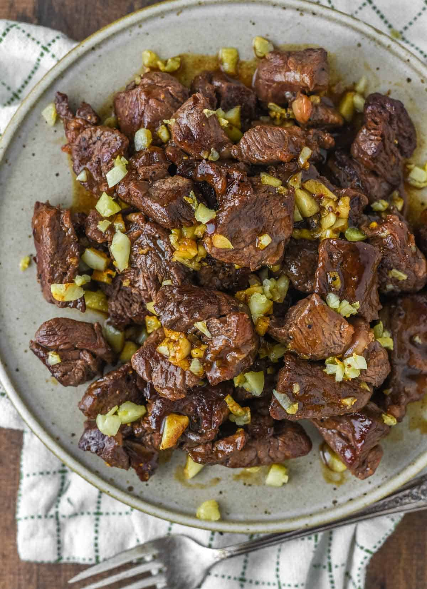

Beef Salpicao
Home

Ingredients:
Filipino Beef Salpicao (Salpicao de Bistek)
Beef Salpicao is a quick, flavor-packed Filipino stir-fry featuring tender beef cubes coated in a rich, buttery, and heavily garlicky sauce.
Because it cooks in under 15 minutes, using a high-quality, tender cut of meat is the secret to keeping it juicy.
Ingredients
- 1.5 lbs (700g) Beef Tenderloin or Ribeye – Cut into 1-inch cubes (avoid tough stewing cuts).
- 2 heads Garlic – Separate into: 1 head finely minced (for marinade/sauce) and 1 head thinly sliced into chips (for topping).
- 3 tbsp Butter – Divided (use cold butter at the end to gloss the sauce).
- 2 tbsp Olive Oil or Cooking Oil – For frying the garlic chips and searing the beef.
- 2 tbsp Worcestershire Sauce – Provides the deep, savory umami base.
- 1 tbsp Oyster Sauce – Adds a hint of sweetness and thickness.
- 1 tbsp Soy Sauce or Liquid Seasoning – For extra depth.
- ½ tsp Flaky Sea Salt or Kosher Salt – To taste.
- 1 tsp Coarsely Ground Black Pepper – For a bold, peppery kick.
Step-by-Step Instructions
- Marinate the Beef
In a bowl, combine the beef cubes, minced garlic, Worcestershire sauce, oyster sauce, soy sauce, and black pepper. Toss well to coat. Let it marinate at room temperature for 15 to 30 minutes.
- Make the Garlic Chips
Heat the oil and 1 tablespoon of butter in a wide skillet over medium-low heat. Add the sliced garlic chips. Fry gently until they turn a light golden brown and get crispy. Immediately scoop them out and set aside, leaving the garlic-infused oil in the pan.
- Sear the Beef (High Heat)
Turn the heat up to high until the pan is smoking hot. Remove the beef from the marinade (save the leftover liquid). Add the beef cubes to the pan in a single layer. Do not overcrowd the pan; cook in batches if needed. Let it sear without moving for 1 to 2 minutes to get a nice crust, then flip to sear the other side.
- Sauce and Glaze
Pour in the remaining marinade liquid. Stir-fry quickly for 1 minute until the sauce reduces slightly and coats the meat.
- Finish with Butter
Turn off the heat. Toss in the remaining 2 tablespoons of cold butter. Stir vigorously until the butter melts into the residual heat, creating a smooth, glossy emulsion.
Top generously with your crispy garlic chips and serve immediately over hot, steaming garlic fried rice (sinangag).